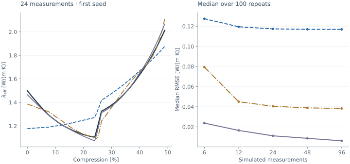

When Does the Backbone Have to Move?
Updated 25 November 2026
A battery line changes recipe. The new electrodes need a few measurements, the model needs an update, and the old recipe is still running next door. Improving one prediction at the expense of the other would be an awkward definition of progress.
Freezing the model’s backbone is an attractive arrangement. Keep the part that turns process records into features, fit a small output head for the new recipe, and leave the old heads alone. With only a few dozen measured electrodes, it is also easier to estimate a handful of coefficients than millions of weights.
That arrangement works until the useful information is in the wrong place. Sometimes the head needs different weights. Sometimes it needs a different shape. Sometimes the backbone has discarded the distinction the decision depends on. Another batch of labels helps with the first problem and can leave the last one entirely untouched.
A skill can be prepared before it is taught
Marosi and Antal’s General progress substitutes for specific training data in language models gives this question an interesting starting point. They train models while withholding supervision for selected skills, then measure how quickly those skills are acquired when the training signal returns. The experiments cover chess, Othello, molecular strings, bracket matching and web text. [1]
In the main experiment, called target thinning, the model still reads every input token. Only selected next-token targets stop contributing to the loss. A reply to check can therefore remain in the text even when the model is never directly rewarded for predicting it. The comparison matches progress on the remaining material, measured by its prediction loss, rather than simply matching training steps.
Even the chess models trained on games containing no checks could rank legal replies to a check nearly as well as fully supervised models. Something useful had been learned from ordinary positions. When direct supervision returned, adaptation was cheap. A control with permuted move labels took 2.4–16 times as many tokens, despite being similarly difficult from initialization. The advantage was partly about relevant structure, not just having weights that had been trained for longer.
The effect also appeared with broader filtering. A 7-billion-parameter model whose Rust documents had been reduced to 3% of their usual share regained half its Rust-term accuracy gap with 2.1% of the training tokens the unfiltered reference had needed to reach that accuracy from initialization. Related programming material had supplied a useful preparation.
The authors also restricted which parameters could change. Updating one upper transformer block or rank-4/16 adapters retained much of the adaptation advantage. Those updates still alter internal representations. The finding supports starting with a small update; it does not identify an output-only head as sufficient.
What the head is allowed to express
For an electrode model, the corresponding question is whether the feature bank already contains useful descriptions of pore transport, particle contacts and compression. A head can combine existing features. It cannot invent a missing measurement by changing their weights.
The backbone produces the features φ(x); the linear head chooses their weights w and an offset b. “Linear” describes the combination, not necessarily the physics. If the feature bank already contains a curved contact response, a linear head can produce a curved conductivity response.
A new thickness or porosity setting might therefore require little adaptation, provided the original training covered the relevant conditions. A change in binder or contact formation might require more. The names of those changes do not decide the issue. Their effect on the information and functions available to the model does.
That matters for the calendering U-shape. Through-plane thermal conductivity can fall and then recover as an electrode is compressed. A contact term that changes with compression can reproduce that behavior; graphite reorientation is another contribution worth testing. The curve alone does not determine their separate shares. [2]
Crossing the minimum does not automatically mean the backbone must move. A representation trained across both sides may already describe the whole curve. A representation that only supplies a monotone trend leaves a linear head unable to turn it into a U, however patiently the head is fitted.
A small test with the contact closure
I used zehner-electrode-thermal to construct two targets along the same compression trajectory. One simply rescales the pore-transport prediction and adds an offset. The other includes the project’s compression-dependent contact term. The porosity trajectory and contact parameters come from its public thick-graphite example. These are simulated conductivity measurements with 2% Gaussian noise. [3]
The narrow representation supplies only the pore-transport prediction. It gets an affine head. A second model keeps that same scalar but uses a fourth-degree polynomial head. A third adds the contact response and its compression-weighted terms to the fixed feature bank, then fits a linear head. All fits use least squares, so optimizer tuning cannot explain the comparison.
More data, or different features?

For the rescaled target, the narrow model is already expressive enough. More measurements reduce its estimation error. At 96 measurements its median error is about 0.003 W/(m K), slightly better than the more flexible alternatives. Extra coefficients have to be estimated too.
For the contact-driven target, the narrow linear head remains at about 0.117 W/(m K). Fitting it directly to all 401 noiseless evaluation states gives essentially the same error. On this test range, more labels cannot fix the missing curvature in its allowed predictions.
The polynomial head reduces the 96-measurement error to about 0.038 W/(m K) without changing the original scalar feature. The expanded feature bank reduces it to about 0.006 W/(m K). Its noiseless target lies exactly in the chosen feature span, so its remaining error comes from estimating coefficients using noisy measurements.
This is a useful distinction before scheduling an expensive retraining run. A persistent error floor for a linear head can be a restriction of the head, rather than lost information in the backbone. Here the original scalar still tracks compression, so a nonlinear readout can recover some of the missing shape.
Experiment setup and reproduction
The script uses a pinned upstream commit and checks its source hashes. It constructs fixed physical features and fits their readouts. Samples span the full compression interval in every run; the comparison tests fitting within that interval. Contact parameters come from the public closure.
Training sizes are 6, 12, 24, 48 and 96. Noise is independent with standard deviation equal to 2% of the noiseless conductivity. Each size uses 100 paired random seeds. Test error is root-mean-square error against 401 uniformly spaced, noiseless states. The dense-grid projection measures the best error of each specified feature/head class on those states.
Benchmark script · All curves and results · Numerical summary · Source and reproduction notes on GitHub.
python -m pip install numpy
python benchmark.pyWhen the distinction really is missing
Now take two electrode states with the same measured porosity and compression, but different contact quality. The closure can assign them different conductivities. A model given only those shared measurements must predict the same value for both, regardless of the head’s size.
The script constructs one such pair by reducing the bridge fraction at a fixed compression state. Conductivity changes from about 1.14 to 0.78 W/(m K). If both states occur equally often, their best shared prediction is their midpoint. Even with perfect labels, the resulting error is about 0.18 W/(m K).
If an acoustic signal, image or adhesion measurement distinguishes those states but the backbone maps both to the same features, the representation must preserve something it currently throws away. Expanding it or adapting an internal layer makes sense. If the raw records contain no distinguishing measurement, the next purchase should be a measurement, not a larger network.
This also sharpens what “the physics changed” should mean operationally. An unfamiliar mechanism matters when the current inputs and feature map cannot support the required prediction. A new mechanism that is already captured by measured, reusable features may only need a new readout. A familiar mechanism with an unobserved state can be just as troublesome as an unfamiliar one.
A rule for deciding what to change
On a real line, the target law is unavailable. The useful alarm is a pattern in held-out errors that survives a head update. Errors might track compression, temperature or material lot rather than fluctuating around zero. If more representative labels reduce uncertainty in the coefficients but leave that pattern, inspect what the model can express.
First check the measurement chain. A sensor offset, changed test protocol, inconsistent units or a mislabeled lot can mimic a model failure. Then compare the existing head with a modest nonlinear head and a feature expansion, using later campaigns or held-out lots for evaluation. Randomly splitting neighboring samples can make all three look more transferable than they are.
If only the larger head helps, keep the backbone. If preserving another recorded signal helps, change the representation. If no available signal distinguishes the failed cases, collect one or narrow the operating envelope. A small internal adapter or an added branch may be enough; full retraining is one option, not the default response to a disappointing residual plot.
There is a retention cost to that last step. In Interference and retention, the fixed-feature squared-loss calculation makes the cost of an update to an older task depend on the feature directions it occupies. Once the encoder itself changes, old heads also receive changed inputs. The fixed-feature result is no longer the whole accounting. Old operating windows need their own evaluation alongside the new recipe. [4]
Freezing the encoder, preprocessing and old heads preserves those prediction functions. Updating a shared head or normalization statistics does not. Even a separate new head needs fresh uncertainty checks; freezing weights does not make its confidence calibrated on a changed process.
The Jeff/Jev decision pattern gives that uncertainty somewhere useful to go. A conductivity estimate can feed a separate continue, re-measure or review decision, with the cost of a wrong action stated explicitly. A rising review rate is worth investigating when its probability estimates remain reliable. A confidently biased model can produce the opposite symptom, so abstention rates and labeled residuals belong together. [5]
The practical aim is to make the smallest change that restores the required accuracy while keeping older work usable. General pretraining can make that change remarkably cheap. The stopping condition for head-only adaptation is more specific: the remaining error is tied to a distinction or function the current readout cannot use. Find out which one before asking the backbone to move.
References
- Marosi, M. & Antal, P. (2026). General progress substitutes for specific training data in language models. arXiv:2611.24844v1, 18 November. Authors’ experiment code.
- Störk, J. (2026). Capturing the calendering U-shape. Preprint; accompanying article. Process-dependent contacts and a separate graphite-reorientation hypothesis.
- Störk, J. zehner-electrode-thermal, pinned source snapshot. Contact closure, thick-graphite parameters and public calendering trajectory. This post’s adaptation experiment reuses those components.
show all 5 referencesshow fewer references
- Störk, J. (2026). Interference and Retention in Continual Learning. Preprint; geometry and experiments.
- How to (Not) Reinvent the Wheel With Jeff. Background on typed outputs, calibration and decision costs; Gestalt-Lab’s Jeff implementation.
Use your identity on another device
Save an encrypted identity file and restore it in another browser. Keep the file and its passphrase private.